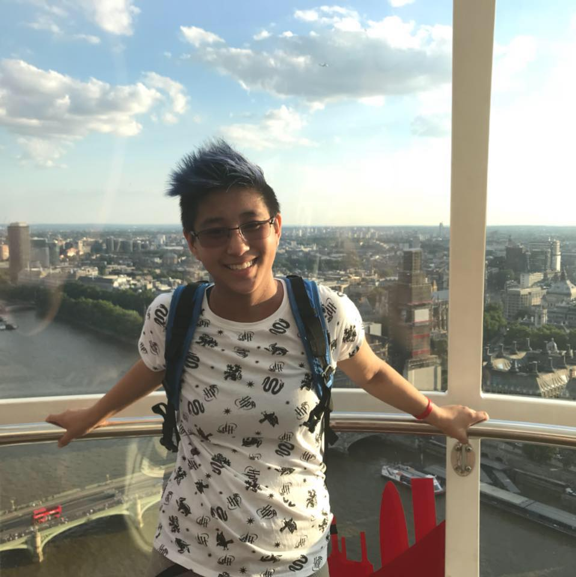

ABOUT NAGME
"Never forget until it's done."
The app you see before you was a dream. A dream where everyone remembered to do everything. Sound like a dream you've ever had? Welcome to NAGME.
Our Humble Beginnings
Just like any other great story or idea, NAGME comes from humble beginnings. Our founder, Casey, wanted a simple way to remind himself to take out the trash without bothering his wife to remind him. So he created a system to remind himself to do simple tasks.
The Day Dreaming About Nags Became A Reality
In the fall of 2019, the "dotPush" team was formed to create NAGME as a class project.
THE TEAM
-

Casey
Casey has mixed feelings about Costco. Going often helps him work through his emotions. His favorite nag is the classic 'take out the trash.' "A certain someone in my life is fond of saying 'it's garbage day' to which I reply 'it's garbage day EVE' (because my nag is set for the day before)."
-

Nikki
Nikki is an avid fan of front-end design and photography. Her least favorite nag has been "It's Alive!" which was created during the testing of this product, and took a long time to stop repeating.
-
Zak
In his free time, Zak likes watching classic old movies. His favorite nag is, "Remember to file your Initech TPS report."
-
Sarah
Sarah is no stranger to nagging. Her all-time favorite is "Don't forget to remind me to..."
-
Nick
Nick enjoys time with friends and taking photos of nature. The nag he loves the most is to remind him of his next adventure.